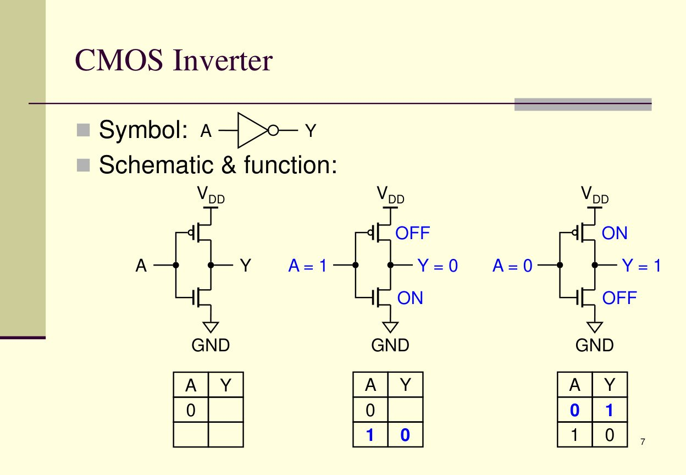
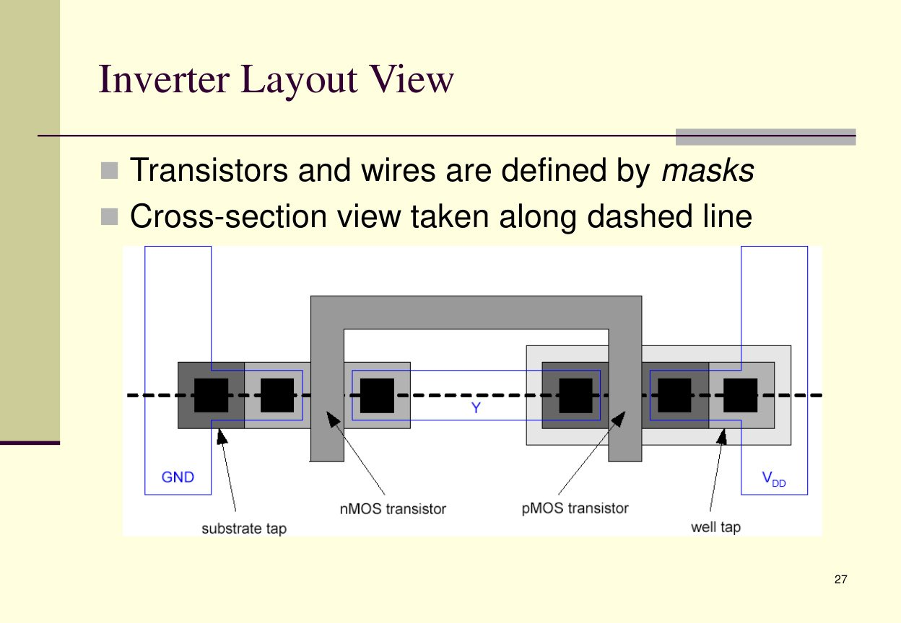
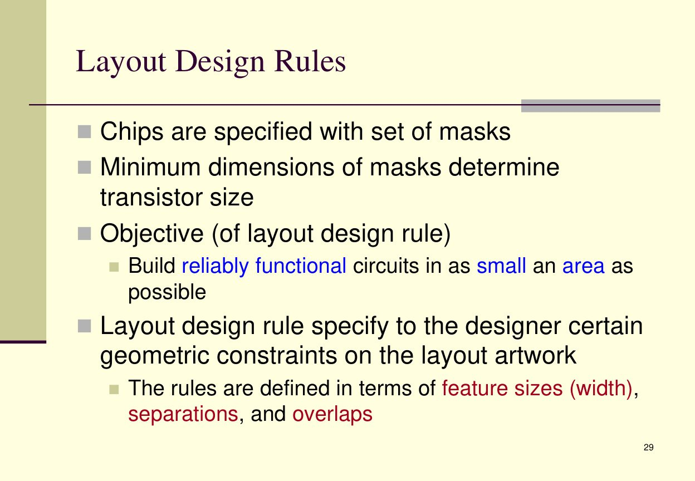
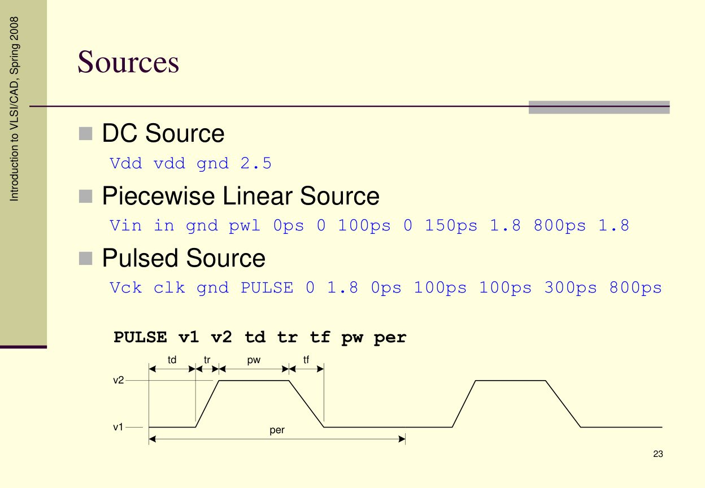
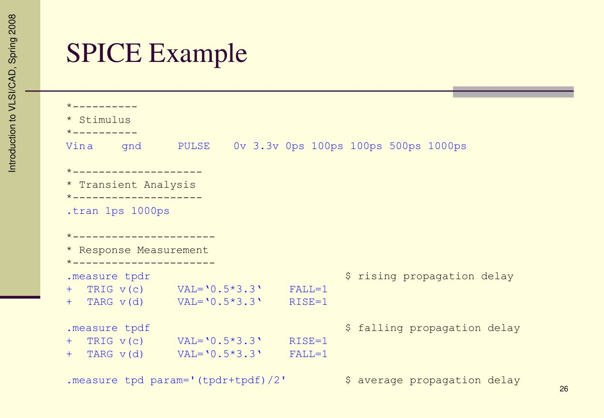

附錄：工具圖片、補充說明與作業檢查
本頁放置補充圖、概念整理與可互動檢查表。
一、CMOS 與 Layout 補充圖

CMOS inverter：PMOS / NMOS 作為開關形成反相器。

Inverter layout view：transistors 與 wires 由 mask 定義。

Detailed mask views：n-well、polysilicon、diffusion、contact、metal。
二、SPICE 補充圖

SPICE source：DC、PWL、PULSE。

SPICE .measure 可量 delay、rise/fall time。
三、互動式小測驗
Q1：NAND 的 CMOS 結構？
答案：PMOS 並聯、NMOS 串聯。
Q2：NOR 的 CMOS 結構？
答案：PMOS 串聯、NMOS 並聯。
Q3：DRC 和 LVS 差在哪？
DRC 檢查 layout 幾何規則；LVS 檢查 layout 抽出的電路是否和 schematic / netlist 一樣。
Q4：為什麼 post-sim 會比 pre-sim 慢？
因為 post-sim 加入 PEX 抽出的寄生電阻與電容，會增加延遲與改變波形邊緣。
四、範例檔案位置
本 ZIP 內含以下範例程式碼：
examples/circuit.spi examples/testbench.sp examples/nand_post_tb.sp examples/run_lab89.sh